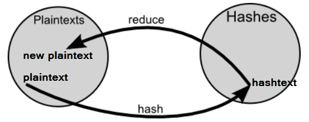
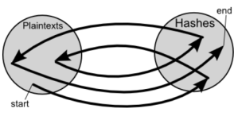
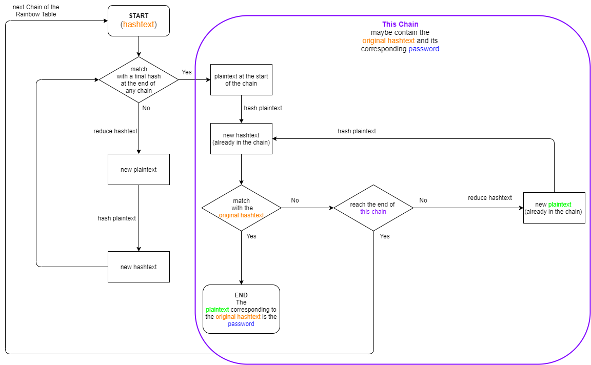
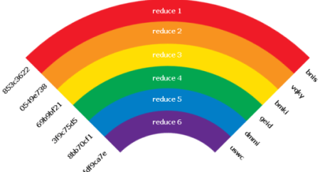
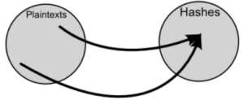
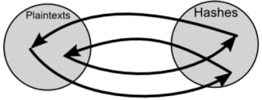

Rainbow Tables
Rainbow Tables
have pre-computed
plaintext keys in their corresponding
ciphertext(hashes)Store each hash of every plaintext takes an amount of memory which
simply does nott exist. Because of that Rainbow Tables use chains to achieve a compromise between pre-computation
and memory usage.
For a given number of possible passwords the increase of the
Chain Length means:
• decrease of the memory usage → because there
are more links between hashtext and plaintext
• increase of the computation time → when we find the chain that
maybe contain the
hashtext we have to reduce and hash until we find a
match
example 1:A rainbow table with 10 chains of length 100 → we
have hashed 1000 plaintexts
example 1:A rainbow table with 10 chains
of length 200 → we have hashed 2000 plaintexts
Rainbow Tables and Dictionaries
Dictionaries(hash tables) are good for common passwords, Rainbow Tables are good for tough(random)
passwords.
The best approach would be to recover as many passwords as possible using dictionaries. For those
that remain, use Rainbow Tables.
Reduction function
A hash function maps plaintexts to hashes, the reduction function maps hashes to plaintexts

Chains
The chains which make up rainbow tables are chains of one way hash and reduction functions starting
at a certain plaintext, and ending at a certain hashtext.
The table only stores the starting plaintext, and
the final hash you choose to end with after obtaining enough chains; but taking the reduction function and hash
function into account all other intermediates values can also be determined

Searching in a rainbow table
With a rainbow table we do a search for the ciphertext(hashed text) within the database of the
rainbow table. If there is a match we go to the start of the chain and start hashing until there is a
match

Eliminate Collision and Loop problems from Rainbow Table
The reason they're called Rainbow Tables is because each column uses a different reduction
function. If each reduction function was a different color, and you have starting plaintexts at the top and final
hashes at the bottom, it would look like a rainbow (a very vertically long and thin one).
The use of multiple
reduction function reduce the possibility of Collision for two chains. In fact two chains to collide and merge they
must hit the same value on the same iteration.
•
Collision → A given hash may be generated by
multiple plaintexts, which is a big problem for Rainbow Table chains because it causes chains which start different
to converge into one.
This mean that a hashing algorithm that generates collisions fairly regularly will be
more secure.
•
Loops → They are caused when a hash is reduced to a plaintext that was hashed at a previous point
in the chain
Tool to perform rainbow cracking:
ophcrackBibliography:
http://kestas.kuliukas.com/RainbowTables/https://www.thesecurityblogger.com/understanding-rainbow-tables/https://www.geeksforgeeks.org/understanding-rainbow-table-attack/